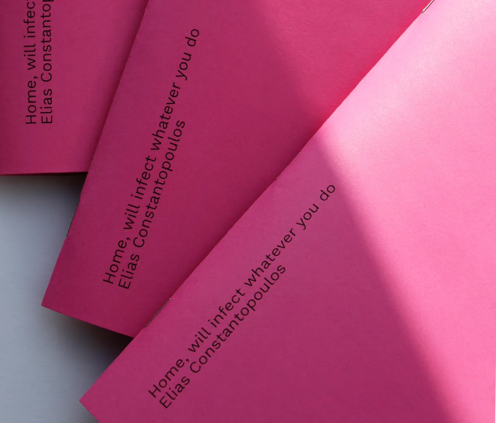
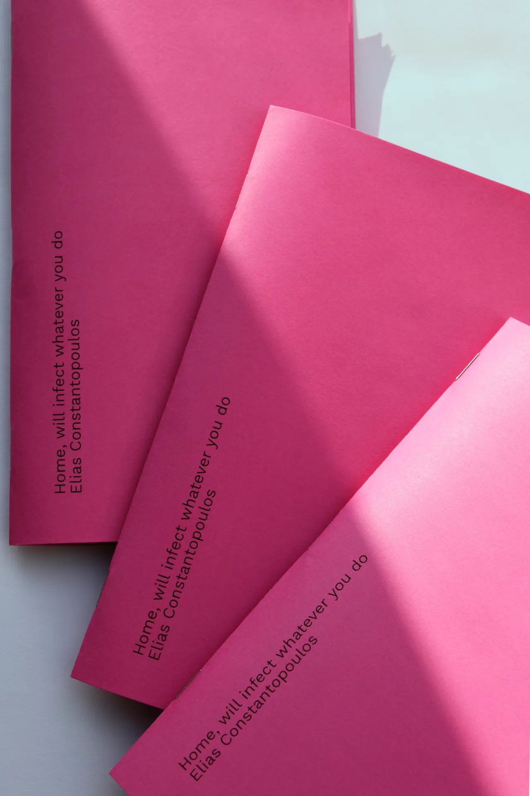
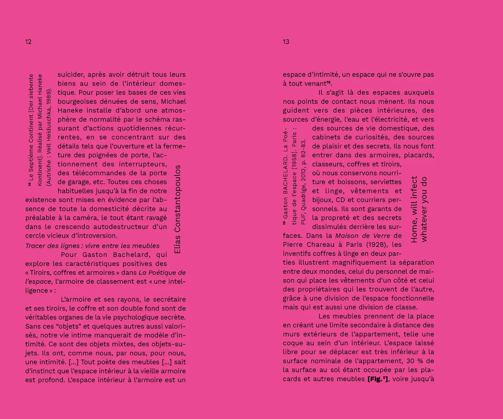
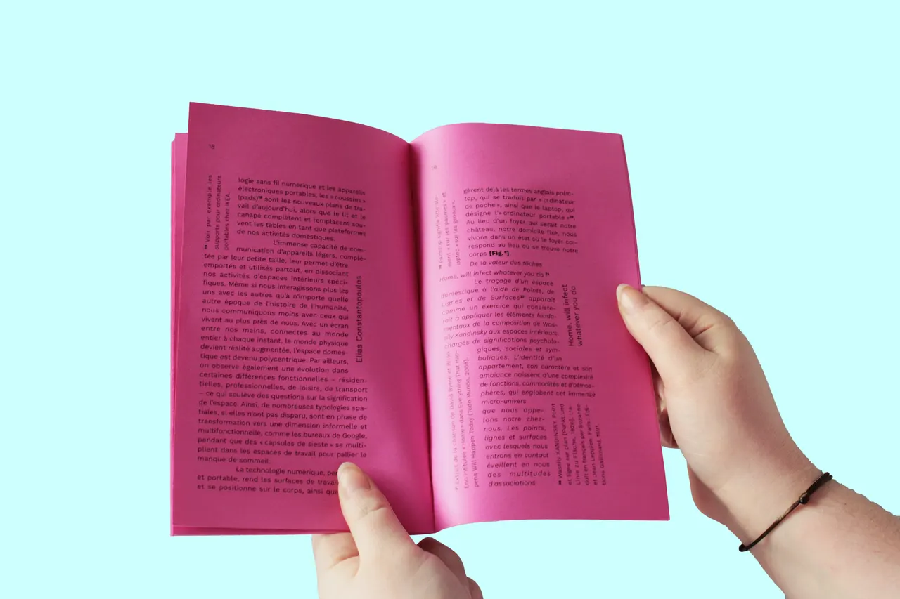
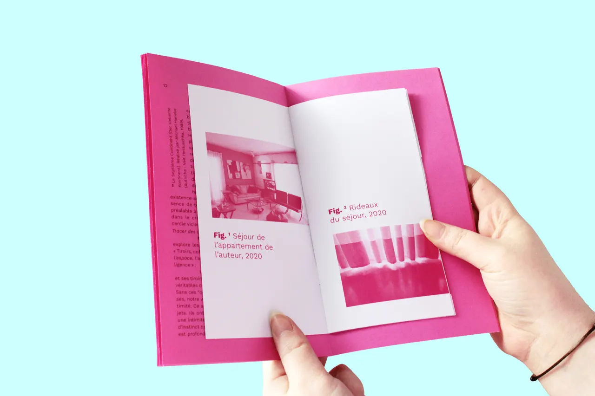
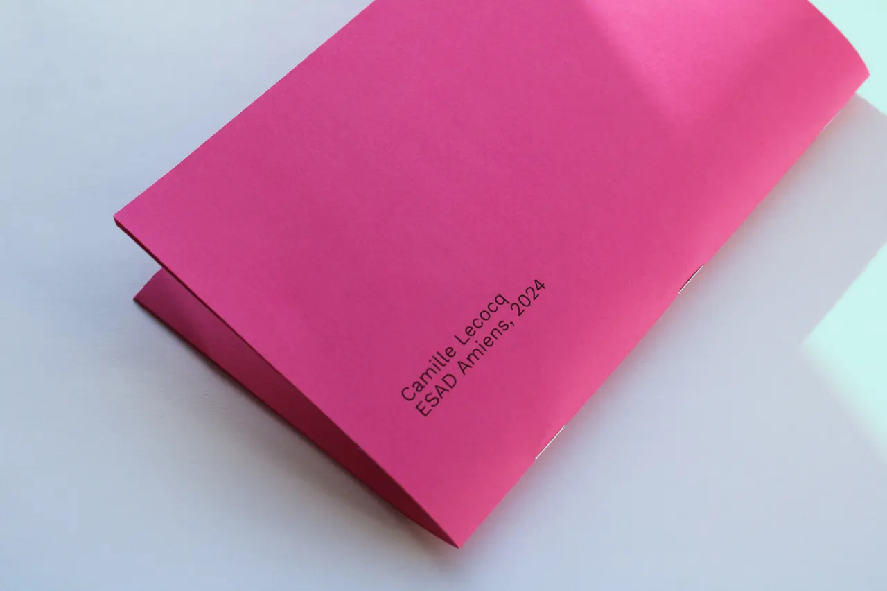

HOME WILL INFECT
- 12 × 20 cm
- 2024
Proposition de mise en page typographique du texte "Home, will infect whatever you do" d'Elias Constantopoulos.
Imagination d'un livret éditorial qui mettrait en valeur le texte d'Elias Constantopoulos selon lequel notre environnement impacterait tout notre être.
Le corps de texte serait la représentation de qui nous sommes et les appels de note, les citations ou les appels de figure seraient l'environnement qui nous perturbe.
Les images se retrouvent dans un livret au coeur de l'édition.









